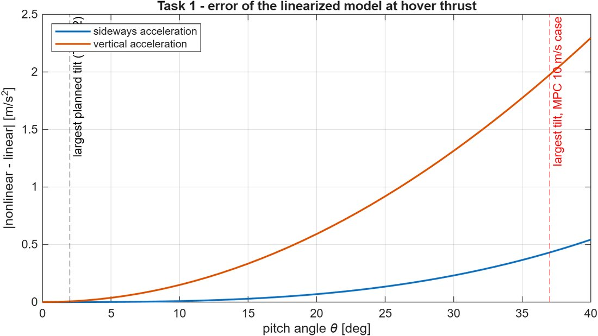
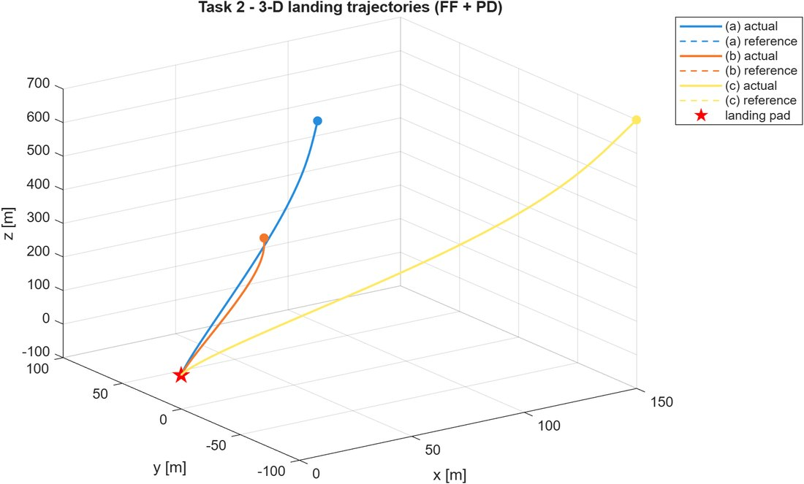
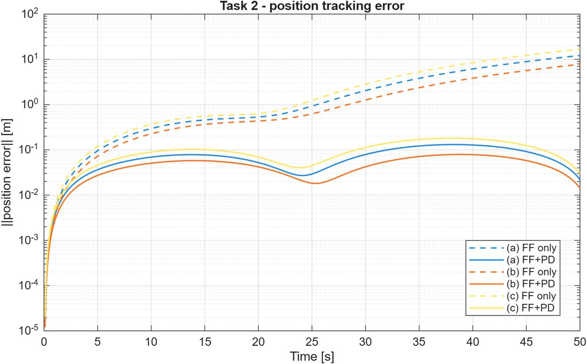
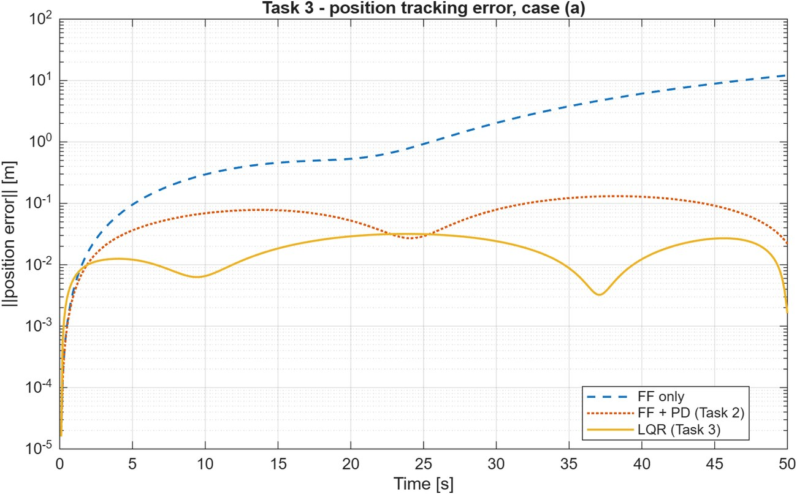
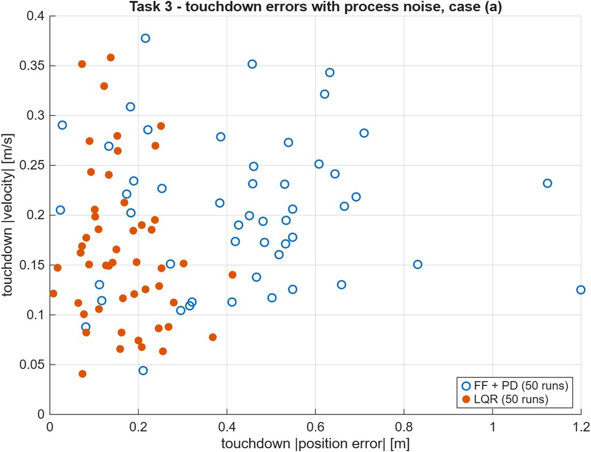
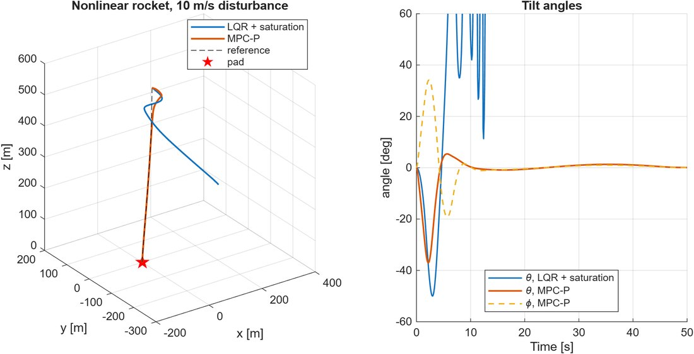
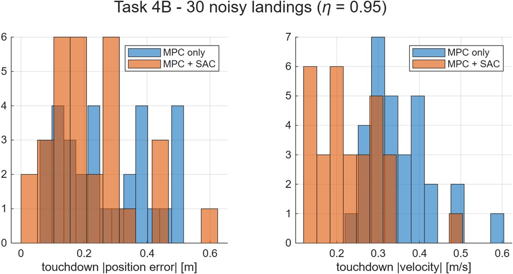
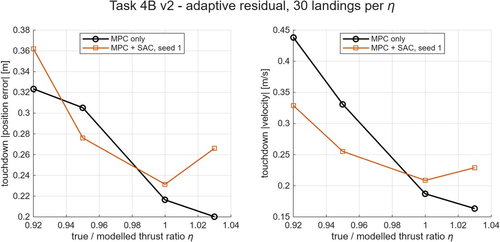

A 30-tonne booster falls from about 500 m with four throttleable engines and 50 seconds to land upright on a pad. I derived its model, then landed it with cascade PD, optimal LQR, constrained MPC and reinforcement learning, each building on the last, and compared what each one actually buys you.
Course
ME 297 midterm, SJSU, Fall 2026
System
10-state rocket, 4 engines at 0–2000 kN each, 0.1 s control step
Stack
MATLAB, no toolboxes: own QP solver, own neural networks and SAC
Outcome
MPC lands a 10 m/s disturbed start within 2.7 mm; clipped LQR misses by 108 km
/rocket/state
illustration: planned descent, tilt = ẍ / g
t 0.0 sz 0 mż 0 m/sθ 0.0°
/roadmap
Each controller builds on the last
The model feeds the planner, the planner feeds LQR, LQR's cost-to-go sits inside MPC, and MPC is the expert that the RL policy corrects.
A linear model that's accurate where the rocket actually flies, and checked rather than trusted.

linear vs. nonlinear model error as the rocket tilts
What I built
From the full nonlinear equations (rotation matrix, Euler's rotation equation) I derived a 10-state linear model about hover: position, velocity, tilt and tilt rate on each side axis, plus height and vertical speed. Inputs are the pitch and roll engine differences and total thrust. It's discretized with forward Euler at 0.1 s, and a thrust-allocation step turns the three inputs back into four engine thrusts.
The key structure: the rocket can't push sideways, only lean. So between a steering command and sideways position there's a chain of four integrators, which shapes every controller that follows.
Concepts
Rigid-body dynamics
Linearization about hover
State-space models
Discretization
Controllability
Thrust allocation
Challenges and fixes
problem
A hand derivation can hide a missing term or a wrong sign, and the small-angle assumption has to hold somewhere.
fix
Linearized the nonlinear equations numerically by nudging every state and input. It matches the hand-derived matrices to about 10⁻¹⁰, and shows the model is near-exact at the 2° planned tilt but 2 m/s² off vertically at 37°.
problem
The exam statement had inconsistencies: a force equation subtracting g instead of mg, a sign on the roll axis, and d called both a diameter and a moment arm.
fix
Documented each one and the convention I used, so results stay traceable to the problem as given.
02
Plan a path, track it with PD
A smooth landing timetable, and a controller that follows it without optimization.

three starts, planned vs. flown

feedforward only (dashed) vs. feedforward + PD
What I built
Each axis is a polynomial in time fixed by its boundary conditions: 7th order sideways (position, velocity, tilt and tilt rate at both ends) and 5th order vertically. Feedforward inverts the integrator chain to get the engine commands that follow the path exactly. A cascade PD then corrects errors: a slow outer loop (0.4 rad/s) turns position error into a tilt command, and a fast inner loop (2.0 rad/s) turns that into an engine difference. All six gains come from pole placement, critically damped.
Concepts
Polynomial trajectory planning
Feedforward / model inversion
Cascade control
Pole placement
Challenges and fixes
problem
Feedforward alone missed the pad by 6–13 m, even though it's exact for the continuous model.
fix
Traced it to forward-Euler lag accumulating through four integrators over 500 steps. Adding cascade PD brought the miss to 1.0–2.4 cm, over 100× better.
03
Optimal feedback with LQR
Write down what a good landing costs, and let the math find the best controller.

tracking error: feedforward, PD and LQR

50 noisy landings each: PD (blue) vs. LQR (orange)
What I built
A finite-horizon LQR tracking controller: a backward Riccati recursion over all 500 steps gives a time-varying gain and feedforward term, u = Kₜx + kₜ, computed once offline. I tuned the state and input weights on landing accuracy over noisy flights, then compared PD and LQR on 50 Monte Carlo landings with random disturbances.
Concepts
LQR
Riccati recursion
Dynamic programming
Cost weighting
Monte Carlo testing
Challenges and fixes
problem
The exam's cost penalizes raw thrust, but hovering needs 294 kN. The optimal controller under-thrusts and sinks below the plan.
fix
Penalized the deviation from feedforward thrust, (u − ū)ᵀR(u − ū), which removes the bias. Both versions are reported.
problem
One clean landing proves nothing once there's process noise.
fix
50-run Monte Carlo per controller. LQR cut the noisy landing error from 0.44 m to 0.16 m, close to the floor that unpredictable gusts allow.
04
Respect the engine limits with MPC
A controller that plans inside 0 ≤ Tᵢ ≤ 2000 kN instead of discovering the limits by being clipped.

nonlinear rocket, 10 m/s kick: clipped LQR tumbles, MPC lands
Receding-horizon MPC: every 0.1 s it solves a quadratic program over the next 2 s (60 decision variables, 160 thrust constraints), applies the first input and re-plans. The terminal cost is the LQR cost-to-go from stage 3, so the 2-second plan knows the cost of finishing the whole landing.
Start with +10 m/s sideways
Landing error
Peak thrust
Outcome
LQR, commands clipped
108 km
159 kN
loses control
MPC, exam's terminal cost
4.7 km
2000 kN
loses control
MPC, LQR cost-to-go (mine)
2.7 mm
936 kN
lands
How it wins: steering room is limited to half the total thrust (no engine can go negative). MPC briefly raises total thrust to create room, turns the rocket, then settles back. Clipping can never discover that.
Concepts
Model predictive control
Quadratic programming
ADMM
Terminal cost design
Actuator saturation
Nonlinear validation (RK4)
Challenges and fixes
problem
MATLAB's Optimization Toolbox wasn't available, so there was no QP solver.
fix
Wrote an ADMM QP solver (the method behind OSQP), checked against a reference solver to 4 digits. A full 500-step MPC landing solves in under half a second.
problem
The exam's fixed terminal penalty diverged in the hardest case: a 2-second plan can't see the rest of the landing.
fix
Used the time-varying LQR cost-to-go as the terminal cost. It lands where the exam's version fails, and matches LQR exactly when no limit is active.
problem
In that case MPC tilts the rocket to 33–37°, far outside where the linear model is accurate.
fix
Flew every controller on the full nonlinear equations with RK4. MPC still lands 1.8 cm from the pad at 37° tilt; clipped LQR hits the ground 8.7 km away.
05
Residual reinforcement learning
Find out what learning adds on top of a good model-based controller, and when.

engines 5% weaker than modelled: MPC alone vs. MPC + SAC

random engine strength: helps when weak, hurts when strong
What I built
A Soft Actor-Critic agent that adds a small correction (±10–30 kN) to the MPC's command. A projection onto the feasible thrusts sits after the sum, so no output from the network, trained or not, can break the engine limits. With no RL toolbox available, I wrote SAC from scratch in MATLAB: the networks, backpropagation, the Adam optimizer and the update rules, with gradients checked against finite differences.
Concepts
Soft Actor-Critic
Residual policy learning
Safe action projection
Certainty equivalence
Model mismatch
Statistical testing
Challenges and fixes
problem
With an exact model, the learned correction didn't beat MPC, and in one run made it slightly worse.
fix
Explained it with certainty equivalence: for linear dynamics, zero-mean noise and quadratic cost, the noise-free optimal controller is already optimal. So I tested where learning can help: engines 5% weaker than the model. There, SAC cut touchdown velocity by 34%.
problem
An RL improvement from one training run could be luck.
fix
Retrained with a new seed (−32%, repeatable), used paired tests over 30 identical landings (p < 0.001), and checked the critic: its predictions correlate 0.98–0.99 with actual returns.
problem
With a different random engine strength in every episode, the policy only partly adapted.
fix
Reported it as a partial result: it learned mostly "add thrust", which helps weak engines and hurts strong ones. True adaptation would need more training or a better input signal.
/results
Results
Model-based control wins when the model is right; MPC is essential once limits bind; learning pays off only where the model is wrong.
2.2 mmLQR landing error without noise, vs. 1.7 cm for cascade PD
2.7 mmMPC landing error after a 10 m/s sideways kick, where clipped LQR misses by 108 km
−34%touchdown velocity with residual SAC when the engines are 5% weaker than modelled